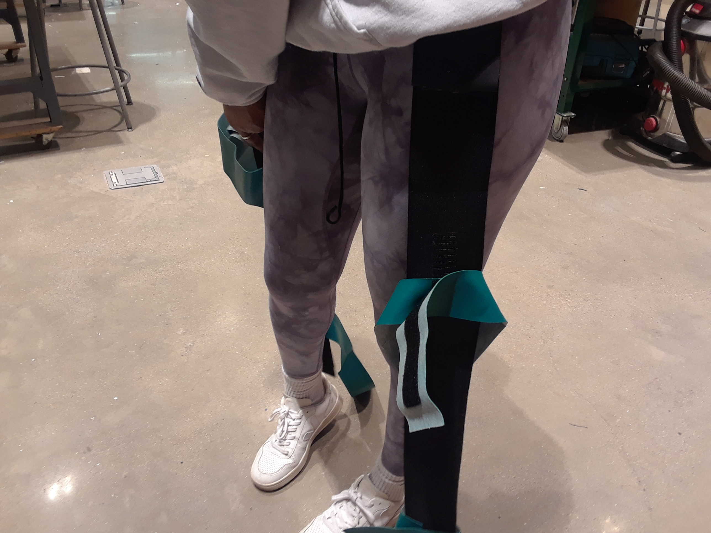
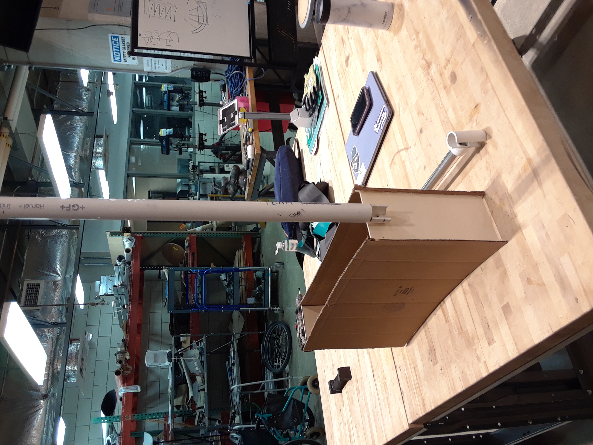

Scissoring Gait Assistive Device

A lot of patients with scissoring gait does not have access to the assistive devices in the current market due to its price and lack of customization. Using cheap but sturdy materials, my team and I were able to come up with an innovative device that is more accessible for patients with scissoring gait. We seek to add more customization to our design to suit more patients and test different materials to reduce the price even more
Prototypes

This was our first prototytpe we made. The patient would wear this like a knee brace, which would then use the tension of the rubber band to keep the knees separate. We eventually moved on to a different prototype since this design heavily limited customization

This was our second prototype before our final design. This design is similar to our final design, but it does not have adjustability in height. This prototype let us realize to add the adjustability feature to our final design when we conducted user-testing